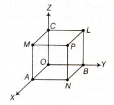
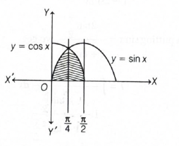
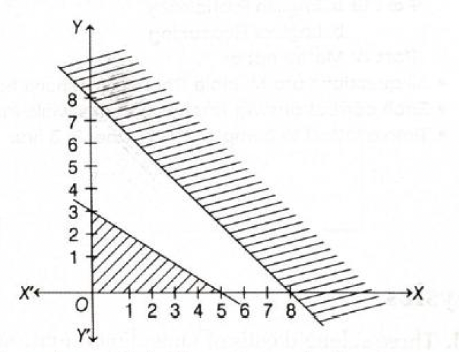

Quick explanation: Put \(z=x+iy\). Then
\(\mathrm{Re}(z+2)=x+2\) and \(|z-2|=\sqrt{(x-2)^2+y^2}\).
Squaring and simplifying gives \(y^2=8x\), which is a parabola.
Also, \(z-2=x-2+iy\), so \(|z-2|=\sqrt{(x-2)^2+y^2}\).
Given \(\mathrm{Re}(z+2)=|z-2|\), we get
\(x+2=\sqrt{(x-2)^2+y^2}\).
Squaring both sides, \((x+2)^2=(x-2)^2+y^2\).
Expanding, \(x^2+4x+4=x^2-4x+4+y^2\).
Cancel \(x^2\) and \(4\): \(4x=-4x+y^2\).
So, \(y^2=8x\).
This is of the standard form \(y^2=4ax\), which represents a
parabola.
Final result: The locus of \(z\) is a parabola.
Simple memory tip: For complex-locus questions,
always convert \(z\) into \(x+iy\).
Why the other options are wrong: The final
equation is \(y^2=8x\), which is not the equation of a circle,
ellipse, or hyperbola.
Exam shortcut: \(\mathrm{Re}(z+2)\) gives the
horizontal coordinate shift, while \(|z-2|\) gives distance from
\((2,0)\); after squaring, the conic becomes clear.
Answer: \((a)\) one positive root and one negative
root
Quick explanation: For \(x^2-abx-a^2=0\), the
product of roots is \(-a^2\). Since \(-a^2<0\) for
\(a\neq0\), the roots must have opposite signs.
Let the roots of \(x^2-abx-a^2=0\) be \(\alpha\) and \(\beta\).
For a quadratic equation \(Ax^2+Bx+C=0\), product of roots is
\(\dfrac{C}{A}\).
Here, \(A=1\) and \(C=-a^2\).
So, \(\alpha\beta=-a^2\).
Since \(a^2\) is positive for \(a\neq0\), \(-a^2\) is negative.
A negative product of roots means one root is positive and the
other root is negative.
The discriminant is \(a^2b^2+4a^2=a^2(b^2+4)\), which is
non-negative, so the roots are real.
Final result: The equation has one positive
root and one negative root.
Simple memory tip: Product of roots negative
means roots have opposite signs.
Why the other options are wrong: Both roots
cannot have the same sign because their product is negative, and
they are not non-real because the discriminant is non-negative.
Exam shortcut: Just check the product of roots:
\(-a^2<0\), so opposite signs immediately.
Answer: \((c)\) \(2^6\)
Quick explanation: Write \(a+2b+3c\) as
\(a+b+b+c+c+c\). Then apply AM-GM to the six positive terms.
BITSAT chapter / topic / subtopic: Algebra /
Sequences and Series - Page M6
Given \(a+2b+3c=12\), where \(a,b,c\in R^+\).
Rewrite the left side as \(a+b+b+c+c+c=12\).
Now apply AM-GM to the six positive numbers \(a,b,b,c,c,c\).
By AM-GM, \(\dfrac{a+b+b+c+c+c}{6}\geq \sqrt[6]{ab^2c^3}\).
Since \(a+b+b+c+c+c=12\), we get \(\dfrac{12}{6}\geq
\sqrt[6]{ab^2c^3}\).
So, \(2\geq \sqrt[6]{ab^2c^3}\).
Raising both sides to the power \(6\), \(ab^2c^3\leq 2^6\).
Therefore, the maximum value of \(ab^2c^3\) is \(2^6\).
Final result: Maximum value \(=2^6\).
Simple memory tip: If the product has powers
like \(ab^2c^3\), split the sum into \(a,b,b,c,c,c\).
Why the other options are wrong: The AM-GM
maximum gives exactly \(2^6\), not \(2^3\), \(2^4\), or \(2^5\).
Exam shortcut: Match the powers in the product
with repeated terms in AM-GM.
Answer: \((a)\) \(\dfrac{n}{6}(n+1)(6n^2+14n+7)\)
Quick explanation: The \(n\)th term follows the
pattern \(a_n=n(2n+1)^2\). Expand it as \(4n^3+4n^2+n\), then
sum using standard formulas for \(\sum n\), \(\sum n^2\), and
\(\sum n^3\).
BITSAT chapter / topic / subtopic: Algebra /
Sequences and Series - Page M6
The given series is \(1\cdot3^2+2\cdot5^2+3\cdot7^2+\cdots\).
So, the \(n\)th term is \(a_n=n(2n+1)^2\).
Expand: \(a_n=n(4n^2+4n+1)=4n^3+4n^2+n\).
Therefore, sum of \(n\) terms is \(S_n=\sum
a_n=\sum(4n^3+4n^2+n)\).
Using summation notation with index \(r\), \(S_n=4\sum r^3+4\sum
r^2+\sum r\).
Now use the standard formulas: \(\sum r=\dfrac{n(n+1)}{2}\),
\(\sum r^2=\dfrac{n(n+1)(2n+1)}{6}\), and \(\sum
r^3=\left[\dfrac{n(n+1)}{2}\right]^2\).
So,
\(S_n=4\left[\dfrac{n(n+1)}{2}\right]^2+4\left[\dfrac{n(n+1)(2n+1)}{6}\right]+\dfrac{n(n+1)}{2}\).
Taking \(\dfrac{n(n+1)}{2}\) common, we get
\(S_n=\dfrac{n(n+1)}{2}\left[2n^2+2n+\dfrac{4(2n+1)}{3}+1\right]\).
Simplifying the bracket,
\(S_n=\dfrac{n(n+1)}{2}\left[\dfrac{6n^2+14n+7}{3}\right]\).
Hence, \(S_n=\dfrac{n}{6}(n+1)(6n^2+14n+7)\).
Final result:
\(\dfrac{n}{6}(n+1)(6n^2+14n+7)\).
Simple memory tip: First identify the general
term, then expand before summing.
Why the other options are wrong: Option \((d)\)
is only the \(n\)th term, not the sum. Options \((b)\) and
\((c)\) do not match the standard summation simplification.
Exam shortcut: Recognize
\(1\cdot3^2,2\cdot5^2,3\cdot7^2\) as \(n(2n+1)^2\), then use
summation formulas.
Answer: \((d)\) \(\dfrac{1+a+abc}{2a(1+b)}\)
Quick explanation: Use change of base and
express everything in terms of \(\log_7 5\), \(\log_5 3\), and
\(\log_3 2\). The key chain is \(\log_7 2=\log_7 5\cdot\log_5
3\cdot\log_3 2=abc\).
Two circles can intersect in at most \(2\) distinct points.
From \(10\) circles, the number of ways to select a pair of
circles is \({}^{10}C_2\).
So, maximum number of intersection points
\(={}^{10}C_2\times2\).
Now, \({}^{10}C_2=\dfrac{10\cdot9}{2}=45\).
Therefore, maximum number of intersection points
\(=45\times2=90\).
Final result: \(90\).
Simple memory tip: Pair the curves first, then
multiply by maximum intersections per pair.
Why the other options are wrong: They do not
match the formula \(2\cdot{}^{10}C_2\).
Exam shortcut: For \(n\) circles, maximum
intersections \(=2\cdot{}^nC_2=n(n-1)\). For \(n=10\), this
gives \(90\).
Answer: \((c)\) 210
Quick explanation: Use the identity
\(\dfrac{C_r}{C_{r-1}}=\dfrac{n-r+1}{r}\), where
\(C_r={}^{n}C_r\). Therefore, \(r\dfrac{C_r}{C_{r-1}}=n-r+1\),
and the sum becomes \(20+19+\cdots+1\).
We use the standard relation
\(\dfrac{{}^{n}C_r}{{}^{n}C_{r-1}}=\dfrac{n-r+1}{r}\).
For \(n=20\),
\(\dfrac{C_r}{C_{r-1}}=\dfrac{20-r+1}{r}=\dfrac{21-r}{r}\).
So, \(r\dfrac{C_r}{C_{r-1}}=21-r\).
The given expression is
\(\dfrac{C_1}{C_0}+2\dfrac{C_2}{C_1}+3\dfrac{C_3}{C_2}+\cdots+20\dfrac{C_{20}}{C_{19}}\).
This becomes \((21-1)+(21-2)+(21-3)+\cdots+(21-20)\).
So the sum is \(20+19+18+\cdots+1\).
Therefore, required value \(=\dfrac{20\cdot21}{2}=210\).
Final result: \(210\).
Simple memory tip: Ratio of consecutive
binomial coefficients is
\(\dfrac{{}^{n}C_r}{{}^{n}C_{r-1}}=\dfrac{n-r+1}{r}\).
Why the other options are wrong: The expression
reduces exactly to the sum of first 20 natural numbers, which is
210.
Exam shortcut: Spot \(r\dfrac{C_r}{C_{r-1}}\);
it directly becomes \(n-r+1\).
Answer: \((c)\) \(x=r\)
Quick explanation: Expand the determinant along
the first row. After simplification, the determinant becomes
\((x-r)(2x^2-2pq)=0\), so \(x=r\) is one satisfying value.
Simple memory tip: In function substitution
questions, replace \(x\) carefully with the entire bracket.
Why the other options are wrong: Only \(a=2\)
makes \(f(a+1)=f(a-1)\).
Exam shortcut: Since \(f(a+1)-f(a-1)\) is
asked, expand only enough to cancel the common \(-a^2\) terms.
Answer: \((c)\) \(aRb\Leftrightarrow a<b\)
Quick explanation: An equivalence relation must
be reflexive, symmetric, and transitive. The relation \(a<b\)
is not reflexive because \(a<a\) is false.
An equivalence relation must satisfy three properties:
reflexive, symmetric, and transitive.
Reflexive means every element must be related to itself, that
is, \(aRa\) must be true for every \(a\).
For option \((c)\), the relation is \(aRb\Leftrightarrow
a<b\).
To check reflexivity, put \(b=a\).
Then we need \(a<a\), which is always false.
So, this relation is not reflexive.
Since it is not reflexive, it cannot be an equivalence relation.
Option \((a)\), \(a+b\) even, is reflexive because \(a+a=2a\) is
even. It is also symmetric and transitive on integers.
Option \((b)\), \(a-b\) even, is also an equivalence relation
because same parity integers are related.
Option \((d)\), \(a=b\), is the equality relation, which is
reflexive, symmetric, and transitive.
Final result: The relation \(aRb\Leftrightarrow
a<b\) is not an equivalence relation.
Simple memory tip: For equivalence relation
questions, first test reflexivity; it often eliminates the wrong
option quickly.
Why the other options are wrong: Options
\((a)\), \((b)\), and \((d)\) satisfy reflexive, symmetric, and
transitive properties, so they are equivalence relations.
Exam shortcut: The symbol \(<\) usually fails
reflexivity because no number is less than itself.
Quick explanation: A conditional statement is
logically equivalent to its contrapositive. So \(p\rightarrow
q\) is always equivalent to \(\sim q\rightarrow \sim p\).
Hence, \(a_1=\dfrac{1}{4}\), \(a_2=0\), \(a_3=\dfrac{3}{8}\),
\(a_4=0\), and \(a_5=\dfrac{1}{8}\).
Therefore, the true statement is \(a_3=\dfrac{3}{8}, a_2=0\).
Final result: \(a_3=\dfrac{3}{8}, a_2=0\).
Simple memory tip: Convert powers of
trigonometric functions into multiple-angle forms before
comparing coefficients.
Why the other options are wrong: The expansion
contains terms up to \(\sin5x\), not \(\sin6x\), and
\(a_1=\dfrac{1}{4}\), not \(\dfrac{1}{2}\) or \(\dfrac{3}{4}\).
Exam shortcut: First replace \(\cos^3x\) by
\(\dfrac{\cos3x+3\cos x}{4}\); the rest becomes simple
product-to-sum.
Answer: \((b)\) 2
Quick explanation: Split the modulus into
cases. If \(\cot x>0\), the equation gives \(\dfrac{1}{\sin
x}=0\), impossible. If \(\cot x\leq0\), it gives \(\cos
x=-\dfrac{1}{2}\), which has two valid solutions in \([0,3\pi]\)
with \(\cot x\leq0\).
First, note that \(\sin x\neq0\), so \(x\neq0,\pi,2\pi,3\pi\).
Case 1: \(\cot x>0\).
Then \(|\cot x|=\cot x\).
The equation becomes \(\cot x=\cot x+\dfrac{1}{\sin x}\).
So, \(\dfrac{1}{\sin x}=0\), which is impossible.
Therefore, there is no solution from this case.
Case 2: \(\cot x\leq0\).
Then \(|\cot x|=-\cot x\).
The equation becomes \(-\cot x=\cot x+\dfrac{1}{\sin x}\).
So, \(-2\cot x=\dfrac{1}{\sin x}\).
Using \(\cot x=\dfrac{\cos x}{\sin x}\), we get \(-2\dfrac{\cos
x}{\sin x}=\dfrac{1}{\sin x}\).
Since \(\sin x\neq0\), multiply by \(\sin x\): \(-2\cos x=1\).
Thus, \(\cos x=-\dfrac{1}{2}\).
In \([0,3\pi]\), \(\cos x=-\dfrac{1}{2}\) gives
\(x=\dfrac{2\pi}{3},\dfrac{4\pi}{3},\dfrac{8\pi}{3}\).
But we also need \(\cot x\leq0\). This is true for
\(x=\dfrac{2\pi}{3}\) and \(x=\dfrac{8\pi}{3}\), but not for
\(x=\dfrac{4\pi}{3}\).
Therefore, the number of valid solutions is \(2\).
Final result: Total number of solutions \(=2\).
Simple memory tip: Whenever modulus is present,
split into sign-based cases first.
Why the other options are wrong: Counting all
solutions of \(\cos x=-\dfrac{1}{2}\) gives 3, but one fails the
condition \(\cot x\leq0\).
Exam shortcut: The positive \(\cot x\) case is
impossible immediately, so only check \(\cot x\leq0\).
Answer: \((a)\) \(\dfrac{\pi^3}{32}\)
Quick explanation: Use
\(\sin^{-1}x+\cos^{-1}x=\dfrac{\pi}{2}\). Then write the
expression as a sum of cubes and complete the square to find the
minimum.
BITSAT chapter / topic / subtopic: Trigonometry
/ Properties of Inverse Trigonometric Functions - Page M38 Differential
Calculus / Minima and maxima - Page M77
Let \(A=\sin^{-1}x\) and \(B=\cos^{-1}x\).
We know the standard identity
\(A+B=\sin^{-1}x+\cos^{-1}x=\dfrac{\pi}{2}\).
The given expression is \(A^3+B^3\).
Use the identity \(A^3+B^3=(A+B)\left[(A+B)^2-3AB\right]\).
So,
\(A^3+B^3=\dfrac{\pi}{2}\left[\left(\dfrac{\pi}{2}\right)^2-3AB\right]\).
Since \(B=\dfrac{\pi}{2}-A\), we get
\(AB=A\left(\dfrac{\pi}{2}-A\right)\).
Why the other options are wrong: The expression
reduces to a constant plus a non-negative square, and the least
possible constant is exactly \(\dfrac{\pi^3}{32}\).
Exam shortcut: Once you see \(\sin^{-1}x\) and
\(\cos^{-1}x\) together, replace one using
\(\cos^{-1}x=\dfrac{\pi}{2}-\sin^{-1}x\).
Answer: \((b)\) 2
Quick explanation: When the origin shifts to
\((1,2)\), use \(x'=x-1\) and \(y'=y-2\). The old equation
becomes \((y')^2=8x'\), which matches \(y^2=4ax\), so \(a=2\).
When the origin is shifted to \((h,k)\), the new coordinates are
\(x'=x-h\) and \(y'=y-k\).
Here the new origin is \((1,2)\), so \(h=1\) and \(k=2\).
Therefore, \(x'=x-1\) and \(y'=y-2\).
This means \(x=x'+1\) and \(y=y'+2\).
Substitute these in the original equation \(y^2-8x-4y+12=0\).
We get \((y'+2)^2-8(x'+1)-4(y'+2)+12=0\).
Expanding, \(y'^2+4y'+4-8x'-8-4y'-8+12=0\).
Simplifying, \(y'^2-8x'=0\).
So, \(y'^2=8x'\).
Comparing with \(y^2=4ax\), we get \(4a=8\).
Therefore, \(a=2\).
Final result: \(a=2\).
Simple memory tip: If origin shifts to
\((h,k)\), use old coordinates \(x=X+h\), \(y=Y+k\).
Why the other options are wrong: The
transformed equation is \(y^2=8x\), so \(4a\) must be \(8\),
giving only \(a=2\).
Exam shortcut: Complete the square mentally:
\(y^2-4y=(y-2)^2-4\), so the shift \((1,2)\) quickly gives the
standard parabola.
Answer: \((d)\) None of the above
Quick explanation: Use the angle-bisector
formula
\(\dfrac{L_1}{\sqrt{a_1^2+b_1^2}}=\pm\dfrac{L_2}{\sqrt{a_2^2+b_2^2}}\).
The two bisectors obtained do not match any of the listed paired
options completely.
The angle bisectors of two lines \(L_1=0\) and \(L_2=0\) are
given by
\(\dfrac{L_1}{\sqrt{a_1^2+b_1^2}}=\pm\dfrac{L_2}{\sqrt{a_2^2+b_2^2}}\).
So,
\(\dfrac{3x+4y+7}{\sqrt{3^2+4^2}}=\pm\dfrac{12x+5y-8}{\sqrt{12^2+5^2}}\).
This becomes \(\dfrac{3x+4y+7}{5}=\pm\dfrac{12x+5y-8}{13}\).
Cross-multiply: \(13(3x+4y+7)=\pm5(12x+5y-8)\).
Taking the positive sign, \(39x+52y+91=60x+25y-40\).
So, \(-21x+27y+131=0\), or \(21x-27y-131=0\).
Taking the negative sign, \(39x+52y+91=-(60x+25y-40)\).
So, \(39x+52y+91=-60x-25y+40\).
Therefore, \(99x+77y+51=0\).
The two angle bisectors are \(21x-27y-131=0\) and
\(99x+77y+51=0\).
These do not match any of the paired options exactly.
Final result: None of the above.
Simple memory tip: For angle bisectors, divide
each line by the square root of the sum of squares of its
\(x,y\) coefficients.
Why the other options are wrong: Although some
options contain a similar-looking second equation, the first
bisector is not correctly listed with it.
Exam shortcut: First compute
\(\sqrt{3^2+4^2}=5\) and \(\sqrt{12^2+5^2}=13\), then use
\(13L_1=\pm5L_2\).
Answer: \((b)\) \(x^2+y^2+10x+20y+25=0\)
Quick explanation: Since the circle touches the
X-axis, its radius is equal to the distance of the centre from
the X-axis. Let the centre be \((h,k)\), so the equation is
\((x-h)^2+(y-k)^2=k^2\).
Since the circle touches the X-axis, its radius is \(|k|\).
So the circle can be written as \((x-h)^2+(y-k)^2=k^2\).
The circle passes through \((1,-2)\), so
\((1-h)^2+(-2-k)^2=k^2\).
It also passes through \((3,-4)\), so \((3-h)^2+(-4-k)^2=k^2\).
Solving these two equations gives possible centres \((-5,-10)\)
and \((3,-2)\).
For centre \((-5,-10)\), the radius is \(10\).
So, the equation is \((x+5)^2+(y+10)^2=100\).
Expanding, \(x^2+10x+25+y^2+20y+100=100\).
Therefore, \(x^2+y^2+10x+20y+25=0\).
This matches option \((b)\).
The other possible centre \((3,-2)\) gives another tangent
circle, but that equation is not listed among the options.
Final result: \(x^2+y^2+10x+20y+25=0\).
Simple memory tip: A circle touching the X-axis
has radius equal to the vertical distance of its centre from the
X-axis.
Why the other options are wrong: Option \((b)\)
is the listed circle that passes through the two given points
and touches the X-axis; options \((a)\) and \((c)\) do not
satisfy the full condition.
Exam shortcut: If the circle touches the
X-axis, write \((x-h)^2+(y-k)^2=k^2\) directly.
Answer: \((b)\) \(9x^2-8y^2-18x+9=0\)
Quick explanation: The line \(x=9\) cuts the
hyperbola \(x^2-y^2=9\) at two points. Write the tangents at
those two points and multiply their equations to get the
combined equation of the pair of tangents.
To find where this chord meets the hyperbola, put \(x=9\) in
\(x^2-y^2=9\).
So, \(81-y^2=9\), hence \(y^2=72\).
Therefore, \(y=\pm6\sqrt{2}\).
The two points of contact are \((9,6\sqrt{2})\) and
\((9,-6\sqrt{2})\).
For the hyperbola \(x^2-y^2=9\), tangent at \((x_1,y_1)\) is
\(xx_1-yy_1=9\).
At \((9,6\sqrt{2})\), tangent is \(9x-6\sqrt{2}y=9\), or
\(3x-2\sqrt{2}y-3=0\).
At \((9,-6\sqrt{2})\), tangent is \(9x+6\sqrt{2}y=9\), or
\(3x+2\sqrt{2}y-3=0\).
The combined equation of the pair of tangents is
\((3x-2\sqrt{2}y-3)(3x+2\sqrt{2}y-3)=0\).
This is of the form \((3x-3)^2-(2\sqrt{2}y)^2=0\).
So, \(9x^2-18x+9-8y^2=0\).
Therefore, \(9x^2-8y^2-18x+9=0\).
Final result: \(9x^2-8y^2-18x+9=0\).
Simple memory tip: For \(x^2-y^2=a^2\), tangent
at \((x_1,y_1)\) is \(xx_1-yy_1=a^2\).
Why the other options are wrong: The correct
expansion has \(-18x\) and \(+9\), so the sign pattern must
match option \((b)\).
Exam shortcut: Find the two contact points from
the chord, write the two tangents, and multiply them as a pair.
Answer: \((d)\) \(\dfrac{82}{9}\)
Quick explanation: Treat the position vectors
as points \(A(10,3)\), \(B(12,-15)\), and \(C(a,11)\). For
collinearity, vectors \(\overrightarrow{AB}\) and
\(\overrightarrow{AC}\) must be parallel.
BITSAT chapter / topic / subtopic: Vectors /
Components of a vector in 2D - Page M126 Vectors /
Multiplication of a vector by a scalar - Page M125
Let the three points be \(A(10,3)\), \(B(12,-15)\), and
\(C(a,11)\).
Then
\(\overrightarrow{AB}=B-A=(12-10)\hat{i}+(-15-3)\hat{j}=2\hat{i}-18\hat{j}\).
If \(A,B,C\) are collinear, then \(\overrightarrow{AB}\) and
\(\overrightarrow{AC}\) are parallel.
Therefore, their corresponding components are proportional.
So, \(\dfrac{2}{a-10}=\dfrac{-18}{8}\).
Cross-multiply: \(16=-18(a-10)\).
Thus, \(16=-18a+180\).
So, \(18a=164\), hence \(a=\dfrac{164}{18}=\dfrac{82}{9}\).
Final result: \(a=\dfrac{82}{9}\).
Simple memory tip: Three points are collinear
if the vectors formed from one common point are parallel.
Why the other options are wrong: Only
\(a=\dfrac{82}{9}\) makes the component ratios of
\(\overrightarrow{AB}\) and \(\overrightarrow{AC}\) equal.
Exam shortcut: Convert position vectors into
coordinate points and compare slopes or component ratios.
Answer: \((d)\) \(5\sqrt{2}\)
Quick explanation: Convert the perpendicular
conditions into dot products. Adding them gives \(a\cdot
b+b\cdot c+c\cdot a=0\), so \(|a+b+c|^2=|a|^2+|b|^2+|c|^2\).
Since \(a\cdot b+b\cdot c+c\cdot a=0\), this becomes
\(|a+b+c|^2=3^2+4^2+5^2\).
So, \(|a+b+c|^2=9+16+25=50\).
Hence, \(|a+b+c|=\sqrt{50}=5\sqrt{2}\).
Final result: \(|a+b+c|=5\sqrt{2}\).
Simple memory tip: Perpendicular vectors have
dot product zero.
Why the other options are wrong: The square of
the required vector magnitude is \(50\), so the value must be
\(5\sqrt{2}\).
Exam shortcut: Convert every perpendicular
condition to a dot product and add the equations.
Answer: \((d)\) \(a\cdot b=b\cdot c=c\cdot a=0\)
Quick explanation: The scalar triple product
magnitude is \(|(a\times b)\cdot
c|=|a||b||c||\sin\theta||\cos\alpha|\). For it to equal
\(|a||b||c|\), both factors must be 1, so \(a,b,c\) must be
mutually perpendicular.
For two vectors \(a\) and \(b\), \(|a\times
b|=|a||b|\sin\theta\), where \(\theta\) is the angle between
\(a\) and \(b\).
Now \(|(a\times b)\cdot c|=|a\times b||c||\cos\alpha|\), where
\(\alpha\) is the angle between \(a\times b\) and \(c\).
So, \(|(a\times b)\cdot c|=|a||b||c||\sin\theta||\cos\alpha|\).
Given \(|(a\times b)\cdot c|=|a||b||c|\).
Since \(a,b,c\) are non-zero vectors, divide both sides by
\(|a||b||c|\).
We get \(|\sin\theta||\cos\alpha|=1\).
This is possible only when \(|\sin\theta|=1\) and
\(|\cos\alpha|=1\).
So, \(\theta=\dfrac{\pi}{2}\), meaning \(a\perp b\).
Also, \(\alpha=0\) or \(\pi\), meaning \(c\) is parallel to
\(a\times b\).
But \(a\times b\) is perpendicular to both \(a\) and \(b\).
Therefore, \(c\) is perpendicular to both \(a\) and \(b\).
Hence, \(a,b,c\) are mutually perpendicular.
So, \(a\cdot b=0\), \(b\cdot c=0\), and \(c\cdot a=0\).
Final result: \(a\cdot b=b\cdot c=c\cdot a=0\).
Simple memory tip: The scalar triple product
gives maximum volume when the three vectors are mutually
perpendicular.
Why the other options are wrong: Options
\((a)\), \((b)\), and \((c)\) make only two dot products zero,
but the condition requires all three vectors to be mutually
perpendicular.
Exam shortcut: Equality with \(|a||b||c|\)
means maximum possible scalar triple product, which occurs for
three mutually perpendicular vectors.
Answer: \((c)\) \(\cos^{-1}(1/3)\)
Quick explanation: Take direction ratios of two
body diagonals of a cube, such as \((a,a,a)\) and \((-a,a,a)\).
Use the dot product formula for angle between two vectors to get
\(\cos\theta=\dfrac{1}{3}\).
BITSAT chapter / topic / subtopic:
Three-dimensional Coordinate Geometry / Direction cosine and
direction ratios - Page M64 Vectors / Scalar product or dot
product - Page M125

Let each edge of the cube be \(a\).
Take two body diagonals of the cube with direction ratios
\((a,a,a)\) and \((-a,a,a)\).
Let the acute angle between these diagonals be \(\theta\).
For two vectors with direction ratios \((a_1,b_1,c_1)\) and
\((a_2,b_2,c_2)\),
\(\cos\theta=\dfrac{a_1a_2+b_1b_2+c_1c_2}{\sqrt{a_1^2+b_1^2+c_1^2}\sqrt{a_2^2+b_2^2+c_2^2}}\).
Quick explanation: The direction vector of
\(L_1\) is \(3\hat{i}+\hat{j}+2\hat{k}\), and that of \(L_2\) is
\(\hat{i}+2\hat{j}+3\hat{k}\). A vector perpendicular to both is
their cross product.
BITSAT chapter / topic / subtopic:
Three-dimensional Coordinate Geometry / Equation of a line in
space - Page M64 Vectors / Vector product or cross product
- Page M125
The line \(L_1:\dfrac{x+1}{3}=\dfrac{y+2}{1}=\dfrac{z+1}{2}\)
has direction ratios \(3,1,2\).
So, its direction vector is \(b_1=3\hat{i}+\hat{j}+2\hat{k}\).
The line \(L_2:\dfrac{x-2}{1}=\dfrac{y+2}{2}=\dfrac{z-3}{3}\)
has direction ratios \(1,2,3\).
So, its direction vector is \(b_2=\hat{i}+2\hat{j}+3\hat{k}\).
A vector perpendicular to both lines is \(b_1\times b_2\).
Now find its magnitude:
\(\sqrt{(-1)^2+(-7)^2+5^2}=\sqrt{1+49+25}=\sqrt{75}=5\sqrt{3}\).
Therefore, the required unit vector is
\(\dfrac{-\hat{i}-7\hat{j}+5\hat{k}}{5\sqrt{3}}\).
Final result:
\(\dfrac{-\hat{i}-7\hat{j}+5\hat{k}}{5\sqrt{3}}\).
Simple memory tip: A vector perpendicular to
two given vectors is found using their cross product.
Why the other options are wrong: They either
have the wrong sign pattern or the wrong magnitude after
normalising the cross product.
Exam shortcut: Extract direction ratios
directly from the denominators of the symmetric line equation,
then cross multiply.
Answer: \((b)\) \(\dfrac{10}{3\sqrt{3}}\)
Quick explanation: The line direction vector is
\(\hat{i}-\hat{j}+4\hat{k}\), and the plane normal is
\(\hat{i}+5\hat{j}+\hat{k}\). Their dot product is \(0\), so the
line is parallel to the plane, and the distance is the
perpendicular distance from any point on the line to the plane.
BITSAT chapter / topic / subtopic:
Three-dimensional Coordinate Geometry / Equation of a plane in
normal form - Page M65 Three-dimensional Coordinate
Geometry / Distance of a point from a plane - Page M65 Three-dimensional
Coordinate Geometry / Angle between a line and a plane - Page
M65
The given line is \(r=a+\lambda b\), where
\(a=2\hat{i}-2\hat{j}+3\hat{k}\) and
\(b=\hat{i}-\hat{j}+4\hat{k}\).
The given plane is \(r\cdot n=d\), where
\(n=\hat{i}+5\hat{j}+\hat{k}\) and \(d=5\).
Check whether the line is parallel to the plane by calculating
\(b\cdot n\).
\(b\cdot n=(1)(1)+(-1)(5)+(4)(1)=1-5+4=0\).
Since \(b\cdot n=0\), the direction vector of the line is
perpendicular to the normal of the plane.
Therefore, the line is parallel to the plane.
So the distance between the line and the plane is the distance
from any point on the line to the plane.
Take the point \(a=(2,-2,3)\) on the line.
Distance from point \(a\) to plane \(r\cdot n=5\) is
\(\dfrac{|a\cdot n-5|}{|n|}\).
Simple memory tip: If a line is parallel to a
plane, use any point on the line to find the distance from the
plane.
Why the other options are wrong: The
denominator must be the magnitude of the normal vector,
\(\sqrt{27}=3\sqrt{3}\).
Exam shortcut: First check \(b\cdot n=0\). If
yes, avoid complicated line-plane calculations and use
point-to-plane distance.
Answer: \((c)\) \(55/221\)
Quick explanation: Use \(P(E_1\cup
E_2)=P(E_1)+P(E_2)-P(E_1\cap E_2)\), where \(E_1\) is the event
of both cards being red and \(E_2\) is the event of both cards
being kings.
BITSAT chapter / topic / subtopic: Probability
/ Addition Theorems - Page M114 Probability / Definition of
Probability - Page M114
Let \(E_1\) be the event that both cards are red.
Let \(E_2\) be the event that both cards are kings.
Total number of ways of drawing 2 cards from 52 cards is
\({}^{52}C_2\).
There are 26 red cards, so
\(P(E_1)=\dfrac{{}^{26}C_2}{{}^{52}C_2}\).
Now, \({}^{26}C_2=325\) and \({}^{52}C_2=1326\), so
\(P(E_1)=\dfrac{325}{1326}\).
There are 4 kings, so
\(P(E_2)=\dfrac{{}^{4}C_2}{{}^{52}C_2}=\dfrac{6}{1326}\).
The overlap \(E_1\cap E_2\) means both cards are red kings.
There are 2 red kings, so \(P(E_1\cap
E_2)=\dfrac{{}^{2}C_2}{{}^{52}C_2}=\dfrac{1}{1326}\).
Now use the addition theorem: \(P(E_1\cup
E_2)=P(E_1)+P(E_2)-P(E_1\cap E_2)\).
So, \(P(E_1\cup
E_2)=\dfrac{325}{1326}+\dfrac{6}{1326}-\dfrac{1}{1326}\).
Simple memory tip: For "either A or B", use
\(P(A\cup B)=P(A)+P(B)-P(A\cap B)\).
Why the other options are wrong: They either
miss the overlap of red kings or count the favourable cases
incorrectly.
Exam shortcut: In card probability, always
check if two events overlap before adding them.
Answer: \((d)\) All of these
Quick explanation: Since \(A\) and \(B\) are
independent, \(P(A/B)=P(A)=\dfrac{1}{2}\). Also, \(P(A\cup
B)=P(A)+P(B)-P(A\cap B)=\dfrac{3}{5}\), so
\(P\left(\dfrac{A}{A\cup B}\right)=\dfrac{5}{6}\), and the third
conditional probability becomes \(0\).
BITSAT chapter / topic / subtopic: Probability
/ Conditional Probability - Page M114 Probability /
Independent Events - Page M115 Probability / Addition
Theorems - Page M114
Given \(P(A)=\dfrac{1}{2}\) and \(P(B)=\dfrac{1}{5}\).
Since \(A\) and \(B\) are independent events, \(P(A\cap
B)=P(A)P(B)\).
So, \(P(A\cap B)=\dfrac{1}{2}\cdot\dfrac{1}{5}=\dfrac{1}{10}\).
For option \((a)\), \(P(A/B)=P(A)\) for independent events.
Therefore, \(P(A/B)=\dfrac{1}{2}\), so option \((a)\) is
correct.
Now find \(P(A\cup B)\).
\(P(A\cup B)=P(A)+P(B)-P(A\cap B)\).
So, \(P(A\cup
B)=\dfrac{1}{2}+\dfrac{1}{5}-\dfrac{1}{10}=\dfrac{5+2-1}{10}=\dfrac{6}{10}=\dfrac{3}{5}\).
For option \((b)\), \(P\left(\dfrac{A}{A\cup
B}\right)=\dfrac{P(A\cap(A\cup B))}{P(A\cup B)}\).
Since \(A\cap(A\cup B)=A\), this becomes \(\dfrac{P(A)}{P(A\cup
B)}\).
Therefore, \(P\left(\dfrac{A}{A\cup
B}\right)=\dfrac{1/2}{3/5}=\dfrac{1}{2}\cdot\dfrac{5}{3}=\dfrac{5}{6}\),
so option \((b)\) is correct.
For option \((c)\), the denominator is \(A'\cup B'\).
By De Morgan's law, \(A'\cup B'=(A\cap B)'\).
So, \((A\cap B)\cap(A'\cup B')=(A\cap B)\cap(A\cap
B)'=\varnothing\).
Therefore, \(P\left(\dfrac{A\cap B}{A'\cup B'}\right)=0\), so
option \((c)\) is also correct.
Hence all the statements are correct.
Final result: All of these.
Simple memory tip: For independent events,
conditioning on one event does not change the probability of the
other.
Why the other options are not separately enough:
Options \((a)\), \((b)\), and \((c)\) are all true, so the best
option is \((d)\).
Exam shortcut: First calculate \(P(A\cap
B)=P(A)P(B)\), then use it in union and conditional probability
formulas.
Answer: \((b)\) \(8/29\)
Quick explanation: This is a Bayes' theorem
problem. We need the probability that box I was chosen given
that the drawn ball is blue.
BITSAT chapter / topic / subtopic: Probability
/ Bayes' Theorem - Page M115 Probability / Conditional
Probability - Page M114
Let \(E_1\) be the event that the coin shows head, so the ball
is drawn from box I.
Let \(E_2\) be the event that the coin shows tail, so the ball
is drawn from box II.
Since the coin is fair, \(P(E_1)=\dfrac{1}{2}\) and
\(P(E_2)=\dfrac{1}{2}\).
Let \(A\) be the event that the drawn ball is blue.
Box I contains 5 red and 2 blue balls, so
\(P(A/E_1)=\dfrac{2}{7}\).
Box II contains 2 red and 6 blue balls, so
\(P(A/E_2)=\dfrac{6}{8}\).
We need \(P(E_1/A)\), the probability that the ball was drawn
from box I given that it is blue.
By Bayes' theorem,
\(P(E_1/A)=\dfrac{P(E_1)P(A/E_1)}{P(E_1)P(A/E_1)+P(E_2)P(A/E_2)}\).
Substitute the values:
\(P(E_1/A)=\dfrac{\dfrac{1}{2}\cdot\dfrac{2}{7}}{\dfrac{1}{2}\cdot\dfrac{2}{7}+\dfrac{1}{2}\cdot\dfrac{6}{8}}\).
Cancel the common factor \(\dfrac{1}{2}\) from numerator and
denominator.
So,
\(P(E_1/A)=\dfrac{\dfrac{2}{7}}{\dfrac{2}{7}+\dfrac{6}{8}}\).
Simple memory tip: Bayes' theorem reverses the
condition: from "blue given box" to "box given blue".
Why the other options are wrong: They do not
correctly account for both ways of getting a blue ball: from box
I and from box II.
Exam shortcut: Because the coin is fair, the
\(\dfrac{1}{2}\) factors cancel; just compare \(\dfrac{2}{7}\)
and \(\dfrac{6}{8}\).
Answer: \((c)\) 2
Quick explanation: The question is asking for
the variance of \(X\). Use
\(\operatorname{Var}(X)=E(X^2)-[E(X)]^2\).
BITSAT chapter / topic / subtopic: Probability
/ Mean and Variance of Random Variable - Page M115 Statistics
/ Variance and standard deviation - Page M137
Given \(E(X)=3\).
Also given \(E(X^2)=11\).
The variance formula for a random variable is
\(\operatorname{Var}(X)=E(X^2)-[E(X)]^2\).
Substitute the values: \(\operatorname{Var}(X)=11-(3)^2\).
So, \(\operatorname{Var}(X)=11-9=2\).
Final result: Variance of \(X=2\).
Simple memory tip: Variance is "mean of square
minus square of mean".
Why the other options are wrong: The direct
formula gives \(2\), not \(8\), \(5\), or \(1\).
Exam shortcut: Whenever \(E(X)\) and \(E(X^2)\)
are given, immediately use \(E(X^2)-[E(X)]^2\).
Answer: \((d)\) \(3/5\)
Quick explanation: Use
\(\sigma^2=\dfrac{1}{n}\sum x_i^2-\left(\dfrac{1}{n}\sum
x_i\right)^2\). Here \(n=10\), \(\sum x_i=12\), and \(\sum
x_i^2=18\).
BITSAT chapter / topic / subtopic: Statistics /
Variance and standard deviation - Page M137
Given number of items \(n=10\).
Given \(\sum x_i=12\).
Given \(\sum x_i^2=18\).
The variance formula is \(\sigma^2=\dfrac{1}{n}\sum
x_i^2-\left(\dfrac{1}{n}\sum x_i\right)^2\).
Substitute the values:
\(\sigma^2=\dfrac{18}{10}-\left(\dfrac{12}{10}\right)^2\).
So, \(\sigma^2=\dfrac{9}{5}-\left(\dfrac{6}{5}\right)^2\).
This gives \(\sigma^2=\dfrac{9}{5}-\dfrac{36}{25}\).
Convert \(\dfrac{9}{5}\) to denominator \(25\):
\(\dfrac{9}{5}=\dfrac{45}{25}\).
So, standard deviation
\(\sigma=\sqrt{\dfrac{9}{25}}=\dfrac{3}{5}\).
Final result: Standard deviation
\(=\dfrac{3}{5}\).
Simple memory tip: Standard deviation is the
square root of variance, so it cannot be negative.
Why the other options are wrong:
\(-\dfrac{3}{5}\) is impossible because standard deviation is
never negative, and the calculation gives \(\dfrac{3}{5}\).
Exam shortcut: Use \(\sigma^2=\text{mean of
squares}-(\text{mean})^2\).
Answer: \((c)\) \(25\sqrt{3}\ \mathrm{m}\)
Quick explanation: Let the distance from the
nearer point to the chimney base be \(x\), and height be \(h\).
Use \(\tan60^\circ=\dfrac{h}{x}\) and
\(\tan30^\circ=\dfrac{h}{50+x}\), then solve.
Let \(PQ\) be the chimney and its height be \(h\) metres.
Let the nearer point be \(B\), and let \(BP=x\).
From \(B\), the angle of elevation is \(60^\circ\).
So, in \(\triangle BPQ\), \(\tan60^\circ=\dfrac{PQ}{BP}\).
Therefore, \(\sqrt{3}=\dfrac{h}{x}\), so \(h=\sqrt{3}x\). This
is equation \((i)\).
The farther point is \(A\), and \(AB=50\ \mathrm{m}\).
So, \(AP=50+x\).
From \(A\), the angle of elevation is \(30^\circ\).
In \(\triangle APQ\), \(\tan30^\circ=\dfrac{PQ}{AP}\).
Thus, \(\dfrac{1}{\sqrt{3}}=\dfrac{h}{50+x}\).
So, \(50+x=h\sqrt{3}\).
Using \(h=\sqrt{3}x\), we get \(50+x=(\sqrt{3}x)\sqrt{3}=3x\).
Therefore, \(50=2x\), so \(x=25\).
Now \(h=\sqrt{3}x=25\sqrt{3}\).
Final result: Height of the chimney
\(=25\sqrt{3}\ \mathrm{m}\).
Simple memory tip: In height-distance
questions, draw two right triangles sharing the same height.
Why the other options are wrong: Only
\(25\sqrt{3}\ \mathrm{m}\) satisfies both angle conditions
\(30^\circ\) and \(60^\circ\) with the 50 m movement.
Exam shortcut: If angles change from
\(30^\circ\) to \(60^\circ\), use the standard values
\(\tan30^\circ=\dfrac{1}{\sqrt{3}}\) and
\(\tan60^\circ=\sqrt{3}\) immediately.
Answer: \((c)\) \(\sqrt{2}\)
Quick explanation: Rationalize the numerator
using \(1-\cos x^2\). Then use the standard limits \(\dfrac{\sin
x}{x}\to1\) and \(\dfrac{\sin(x/2)}{x/2}\to1\).
Therefore, the limit is
\(\dfrac{1}{2\cdot\dfrac{1}{4}\cdot\sqrt{2}}\).
This equals \(\dfrac{1}{\dfrac{\sqrt{2}}{2}}=\sqrt{2}\).
Final result: \(\sqrt{2}\).
Simple memory tip: For \(1-\cos x\), use
\(2\sin^2\dfrac{x}{2}\).
Why the other options are wrong: The
denominator contributes a factor \(2\cdot\dfrac{1}{4}\), and the
extra \(\sqrt{1+\cos x^2}\) gives \(\sqrt{2}\), producing
\(\sqrt{2}\), not \(1/2\) or \(2\).
Exam shortcut: Use small-angle approximations:
\(1-\cos x^2\sim\dfrac{x^4}{2}\) and \(1-\cos
x\sim\dfrac{x^2}{2}\), so the ratio is
\(\dfrac{x^2/\sqrt{2}}{x^2/2}=\sqrt{2}\).
Answer: \((c)\) \(a=2, b=0\)
Quick explanation: For differentiability at
\(x=1\), the function must first be continuous at \(x=1\),
giving \(b=0\). Then equate left-hand derivative and right-hand
derivative to get \(a=2\).
Why the other options are wrong: Only \(a=2,
b=0\) satisfies both continuity and equality of left and right
derivatives at \(x=1\).
Exam shortcut: First equate function values to
get \(b\), then equate derivatives to get \(a\).
Answer: \((c)\) \(6/7\)
Quick explanation: For parametric equations,
slope is \(\dfrac{dy}{dx}=\dfrac{dy/dt}{dx/dt}\). Differentiate
\(x\) and \(y\) with respect to \(t\), then substitute \(t=2\).
Quick explanation: Use the standard
substitution \(t=\tan\dfrac{x}{2}\), so \(\sin
x=\dfrac{2t}{1+t^2}\) and \(dx=\dfrac{2\,dt}{1+t^2}\). The
integral reduces to \(\int \dfrac{2\,dt}{(t-2)^2-3}\).
BITSAT chapter / topic / subtopic: Integral
Calculus / Methods of Integration - Page M88 Integral
Calculus / Trigonometric Integrals - Page M90
Let \(I=\int \dfrac{1}{1-2\sin x}\,dx\).
Use the half-angle substitution \(t=\tan\dfrac{x}{2}\).
Then \(\sin x=\dfrac{2t}{1+t^2}\) and
\(dx=\dfrac{2\,dt}{1+t^2}\).
Substitute these in the integral: \(I=\int
\dfrac{1}{1-\dfrac{4t}{1+t^2}}\cdot\dfrac{2\,dt}{1+t^2}\).
This becomes \(I=\int \dfrac{2\,dt}{1+t^2-4t}\).
Complete the square in the denominator: \(1+t^2-4t=(t-2)^2-3\).
So, \(I=2\int \dfrac{dt}{(t-2)^2-(\sqrt{3})^2}\).
Use the standard result \(\int
\dfrac{du}{u^2-a^2}=\dfrac{1}{2a}\log\left|\dfrac{u-a}{u+a}\right|+C\).
So,
\(I=\dfrac{1}{\sqrt{3}}\log\left|\dfrac{t-2-\sqrt{3}}{t-2+\sqrt{3}}\right|+C\).
Putting \(t=\tan\dfrac{x}{2}\), we get
\(I=\dfrac{1}{\sqrt{3}}\log\left|\dfrac{\tan\dfrac{x}{2}-2-\sqrt{3}}{\tan\dfrac{x}{2}-2+\sqrt{3}}\right|+C\).
Final result:
\(\dfrac{1}{\sqrt{3}}\log\left|\dfrac{\tan\dfrac{x}{2}-2-\sqrt{3}}{\tan\dfrac{x}{2}-2+\sqrt{3}}\right|+C\).
Simple memory tip: For integrals involving
\(1\), \(\sin x\), and \(\cos x\) in a rational form,
\(t=\tan\dfrac{x}{2}\) is often the safest substitution.
Why the other options are wrong: The multiplier
after integration is \(\dfrac{1}{\sqrt{3}}\), not
\(\dfrac{1}{2\sqrt{3}}\) or \(\dfrac{\sqrt{3}}{2}\).
Exam shortcut: After \(t=\tan\dfrac{x}{2}\),
immediately complete the square: \(t^2-4t+1=(t-2)^2-3\).
Answer: \((a)\) \(\dfrac{\pi}{8}\log 2\)
Quick explanation: Put \(x=\tan\theta\), which
changes the limits from \(0\) to \(\dfrac{\pi}{4}\). Then use
the property \(I=\int_0^{\pi/4}\log(1+\tan\theta)\,d\theta\) and
replace \(\theta\) by \(\dfrac{\pi}{4}-\theta\).
BITSAT chapter / topic / subtopic: Integral
Calculus / Definite Integrals - Page M90 Integral Calculus
/ Methods of Integration - Page M88
Let \(I=\int_0^1 \dfrac{\log(1+x)}{1+x^2}\,dx\).
Put \(x=\tan\theta\). Then \(dx=\sec^2\theta\,d\theta\) and
\(1+x^2=1+\tan^2\theta=\sec^2\theta\).
When \(x=0\), \(\theta=0\), and when \(x=1\),
\(\theta=\dfrac{\pi}{4}\).
So, \(I=\int_0^{\pi/4}\log(1+\tan\theta)\,d\theta\).
Now use the definite integral property by replacing \(\theta\)
with \(\dfrac{\pi}{4}-\theta\).
Then
\(I=\int_0^{\pi/4}\log\left(1+\tan\left(\dfrac{\pi}{4}-\theta\right)\right)d\theta\).
Using
\(\tan\left(\dfrac{\pi}{4}-\theta\right)=\dfrac{1-\tan\theta}{1+\tan\theta}\),
we get
\(1+\tan\left(\dfrac{\pi}{4}-\theta\right)=1+\dfrac{1-\tan\theta}{1+\tan\theta}\).
So,
\(I=\int_0^{\pi/4}\left[\log2-\log(1+\tan\theta)\right]d\theta\).
This gives \(I=\dfrac{\pi}{4}\log2-I\).
Hence, \(2I=\dfrac{\pi}{4}\log2\).
Therefore, \(I=\dfrac{\pi}{8}\log2\).
Final result: \(\dfrac{\pi}{8}\log2\).
Simple memory tip: For \(\int_0^1
\dfrac{f(x)}{1+x^2}\,dx\), try \(x=\tan\theta\).
Why the other options are wrong: The definite
integral symmetry gives \(2I=\dfrac{\pi}{4}\log2\), so the value
is \(\dfrac{\pi}{8}\log2\), not \(\dfrac{\pi}{4}\log2\).
Exam shortcut: After \(x=\tan\theta\), use the
transformation \(\theta\to\dfrac{\pi}{4}-\theta\) to pair the
integral with itself.
Answer: \((c)\) \((2-\sqrt{2})\) sq units
Quick explanation: The curves \(y=\sin x\) and
\(y=\cos x\) meet at \(x=\dfrac{\pi}{4}\). The required
curvilinear triangle is bounded by \(y=\sin x\) from \(0\) to
\(\dfrac{\pi}{4}\), by \(y=\cos x\) from \(\dfrac{\pi}{4}\) to
\(\dfrac{\pi}{2}\), and by the X-axis.
BITSAT chapter / topic / subtopic: Integral
Calculus / Area of Bounded Regions - Page M90

The curves are \(y=\sin x\), \(y=\cos x\), and the X-axis.
The curves \(y=\sin x\) and \(y=\cos x\) intersect when \(\sin
x=\cos x\).
This gives \(x=\dfrac{\pi}{4}\) in the first quadrant.
The required region is made of two parts: area under \(y=\sin
x\) from \(0\) to \(\dfrac{\pi}{4}\), and area under \(y=\cos
x\) from \(\dfrac{\pi}{4}\) to \(\dfrac{\pi}{2}\).
So, required area \(=\int_0^{\pi/4}\sin
x\,dx+\int_{\pi/4}^{\pi/2}\cos x\,dx\).
Therefore, total area \(=2\left(1-\dfrac{1}{\sqrt{2}}\right)\).
This simplifies to \(2-\sqrt{2}\).
Final result: \((2-\sqrt{2})\) sq units.
Simple memory tip: For area bounded by two
curves and an axis, split the integral at the intersection
point.
Why the other options are wrong: The two equal
area parts each contribute \(1-\dfrac{1}{\sqrt{2}}\), so the
total is \(2-\sqrt{2}\), not \(2\) or \(2+\sqrt{2}\).
Exam shortcut: In the first quadrant, \(\sin
x=\cos x\) at \(x=\dfrac{\pi}{4}\); split there immediately.
Quick explanation: Put \(v=x+y\), so
\(\dfrac{dv}{dx}=1+\dfrac{dy}{dx}\). The differential equation
becomes separable and integrates to
\(v-x+\dfrac{1}{2}\ln|v^2-2|=C\). Use \(y=1\) when \(x=1\) to
find the constant.
BITSAT chapter / topic / subtopic: Ordinary
Differential Equations / Solution of a Differential Equation -
Page M103
Given
\(\left(\dfrac{x+y-1}{x+y-2}\right)\dfrac{dy}{dx}=\left(\dfrac{x+y+1}{x+y+2}\right)\).
Since the equation contains \(x+y\) repeatedly, put \(v=x+y\).
Then \(\dfrac{dv}{dx}=1+\dfrac{dy}{dx}\), so
\(\dfrac{dy}{dx}=\dfrac{dv}{dx}-1\).
Substitute this in the differential equation:
\(\dfrac{v-1}{v-2}\left(\dfrac{dv}{dx}-1\right)=\dfrac{v+1}{v+2}\).
So, \(\dfrac{dv}{dx}-1=\dfrac{(v+1)(v-2)}{(v-1)(v+2)}\).
Simple memory tip: Expressions like
\(\sqrt{\dfrac{1-x}{1+x}}\) often simplify beautifully by
putting \(x=\cos2\theta\).
Why the other options are wrong: The simplified
function is \(y=\sqrt{1-x^2}\), whose derivative is negative for
positive \(x\), matching option \((d)\).
Exam shortcut: Use the identity
\(\dfrac{1-\cos2\theta}{1+\cos2\theta}=\tan^2\theta\).
Answer: \((b)\) \(4/27\)
Quick explanation: Differentiate
\(y=x(x-1)^2\), set \(\dfrac{dy}{dx}=0\), and use the second
derivative test. The local maximum occurs at \(x=\dfrac{1}{3}\).
BITSAT chapter / topic / subtopic: Differential
Calculus / Minima and maxima - Page M77
Given \(y=x(x-1)^2\).
Differentiate using product rule:
\(\dfrac{dy}{dx}=(x-1)^2+2x(x-1)\).
So, \(\dfrac{dy}{dx}=(x-1)\{(x-1)+2x\}\).
Therefore, \(\dfrac{dy}{dx}=(x-1)(3x-1)\).
For maximum or minimum, put \(\dfrac{dy}{dx}=0\).
Thus, \((x-1)(3x-1)=0\), so \(x=1\) or \(x=\dfrac{1}{3}\).
Now, \(\dfrac{d^2y}{dx^2}=6x-4\).
At \(x=\dfrac{1}{3}\), \(\dfrac{d^2y}{dx^2}=2-4=-2<0\), so
the function has a local maximum there.
At \(x=1\), \(\dfrac{d^2y}{dx^2}=2>0\), so the function has a
local minimum there.
Now find the maximum value:
\(y=\dfrac{1}{3}\left(\dfrac{1}{3}-1\right)^2\).
This gives
\(y=\dfrac{1}{3}\left(-\dfrac{2}{3}\right)^2=\dfrac{1}{3}\cdot\dfrac{4}{9}=\dfrac{4}{27}\).
Final result: Maximum value \(=\dfrac{4}{27}\).
Simple memory tip: For maximum/minimum
questions, first derivative gives candidate points, second
derivative tells their nature.
Why the other options are wrong: The value at
the local maximum is \(\dfrac{4}{27}\), not \(0\), \(-4\), or
none of these.
Exam shortcut: Factor \(\dfrac{dy}{dx}\) as
\((x-1)(3x-1)\) and test \(x=\dfrac{1}{3}\) quickly.
Answer: \((b)\) \(\sin y=e^x(x-1)x^{-4}\)
Quick explanation: Divide by \(x^3\sec y\) to
get an equation in \(\sin y\). Put \(t=\sin y\), which converts
the equation into a linear differential equation.
BITSAT chapter / topic / subtopic: Ordinary
Differential Equations / Solution of a Differential Equation -
Page M103
Given \(x^3\dfrac{dy}{dx}+4x^2\tan y=e^x\sec y\).
Divide by \(x^3\sec y\).
We get \(\cos y\dfrac{dy}{dx}+\dfrac{4}{x}\sin
y=\dfrac{e^x}{x^3}\).
Put \(t=\sin y\).
Then \(\dfrac{dt}{dx}=\cos y\dfrac{dy}{dx}\).
So the equation becomes
\(\dfrac{dt}{dx}+\dfrac{4}{x}t=\dfrac{e^x}{x^3}\).
This is a linear differential equation in \(t\).
Here \(P=\dfrac{4}{x}\), so integrating factor \(IF=e^{\int
4/x\,dx}=e^{4\log x}=x^4\).
Multiplying by \(x^4\), the solution is \(tx^4=\int
x^4\cdot\dfrac{e^x}{x^3}\,dx+C\).
So, \(tx^4=\int xe^x\,dx+C\).
Now, \(\int xe^x\,dx=xe^x-e^x\).
Therefore, \(tx^4=xe^x-e^x+C=e^x(x-1)+C\).
Since \(t=\sin y\), we get \(\sin y\cdot x^4=e^x(x-1)+C\).
Given \(y(1)=0\), so \(\sin y=0\) when \(x=1\).
Substitute \(x=1\): \(0=e(1-1)+C\), so \(C=0\).
Hence, \(\sin y\cdot x^4=e^x(x-1)\).
Therefore, \(\sin y=e^x(x-1)x^{-4}\).
Final result: \(\sin y=e^x(x-1)x^{-4}\).
Simple memory tip: If you see \(\cos
y\dfrac{dy}{dx}\), think of differentiating \(\sin y\).
Why the other options are wrong: The
substitution gives \(\sin y\), not \(\tan y\), and the
integrating factor gives \(x^{-4}\) in the final answer.
Exam shortcut: Convert the equation into linear
form by choosing \(t=\sin y\).
Answer: \((a)\) player A
Quick explanation: Consistency is judged by
standard deviation. Both players have mean \(61\), but player A
has a much smaller standard deviation than player B, so player A
is more consistent.
BITSAT chapter / topic / subtopic: Statistics /
Variance and standard deviation - Page M137 Statistics /
Measures of dispersion - Page M137
Player A runs are \(58,59,60,54,65,66,52,75,69,52\).
Player B runs are \(94,26,92,65,96,78,14,34,98,13\).
The sum of runs for player A is \(610\), so mean of player A
\(=\dfrac{610}{10}=61\).
The sum of runs for player B is also \(610\), so mean of player
B \(=\dfrac{610}{10}=61\).
Since both means are equal, compare their standard deviations.
For player A, using deviations from mean \(61\),
\(\sum(x_i-61)^2=526\).
So, standard deviation of player A
\(=\sqrt{\dfrac{526}{10}}=\sqrt{52.6}\approx7.25\).
For player B, using deviations from mean \(61\),
\(\sum(y_i-61)^2=11416\).
So, standard deviation of player B
\(=\sqrt{\dfrac{11416}{10}}=\sqrt{1141.6}\approx33.79\).
A smaller standard deviation means the scores are less spread
out from the mean.
Since \(7.25<33.79\), player A is more consistent.
Final result: Player A is more consistent.
Simple memory tip: In consistency questions,
lower standard deviation means higher consistency.
Why the other options are wrong: Player B has a
much larger standard deviation, so player B is less consistent;
both players are not equally consistent.
Exam shortcut: If means are equal, compare
standard deviation directly; no need for coefficient of
variation.
Answer: \((b)\) no feasible solution
Quick explanation: The condition \(x+y\geq8\)
requires points on or above the line \(x+y=8\), while
\(3x+5y\leq15\) lies near the origin. These two regions do not
overlap in the first quadrant, so there is no feasible solution.
BITSAT chapter / topic / subtopic: Linear
Programming / Linear Programming - Page M145 Linear
Programming / Graphical Method - Page M145

Given constraints are \(x+y\geq8\), \(3x+5y\leq15\), \(x\geq0\),
and \(y\geq0\).
First draw the line \(x+y=8\). Its intercepts are \((8,0)\) and
\((0,8)\).
The inequality \(x+y\geq8\) represents the region on or above
this line.
Now draw the line \(3x+5y=15\). Its intercepts are \((5,0)\) and
\((0,3)\).
The inequality \(3x+5y\leq15\) represents the region on or below
this line, near the origin.
Since \(x\geq0\) and \(y\geq0\), we are restricted to the first
quadrant.
In the first quadrant, the region \(3x+5y\leq15\) lies below a
line with intercepts only \(5\) and \(3\).
But \(x+y\geq8\) requires points at or beyond the line with
intercepts \(8\) and \(8\).
These two regions have no common point in the first quadrant.
Therefore, there is no feasible region.
If there is no feasible region, the objective function
\(z=3x+2y\) cannot have a minimum under the given constraints.
Final result: The LPP has no feasible solution.
Simple memory tip: In linear programming, first
check whether the feasible region exists before optimizing the
objective function.
Why the other options are wrong: Since no point
satisfies all constraints together, the problem cannot have one
solution, two solutions, or infinitely many solutions.
Exam shortcut: Compare intercepts: \(x+y=8\) is
far from the origin, while \(3x+5y=15\) stays near the origin;
their required shaded regions do not overlap.
Answer: \((a)\) \(128/15\)
Quick explanation: Put \(y=0\) to get the loop
endpoints \(x=0\) and \(x=4\). Since the curve is symmetric
about the X-axis, area of the loop is \(2\int_0^4 y\,dx\).
BITSAT chapter / topic / subtopic: Integral
Calculus / Area of Bounded Regions - Page M90
Given curve is \(4y^2=4x^2-x^3\).
Put \(y=0\) to find where the curve meets the X-axis.
Then \(0=4x^2-x^3=x^2(4-x)\).
So, \(x=0\) or \(x=4\).
The equation contains \(y^2\), so the curve is symmetric about
the X-axis.
Therefore, area enclosed by the loop \(=2\int_0^4 y\,dx\).
From \(4y^2=4x^2-x^3\), we get \(y^2=\dfrac{4x^2-x^3}{4}\).
So, \(y=\dfrac{1}{2}\sqrt{4x^2-x^3}\).
Hence, area \(=2\int_0^4 \dfrac{1}{2}\sqrt{4x^2-x^3}\,dx\).
This simplifies to \(\int_0^4 \sqrt{4x^2-x^3}\,dx\).
Since \(\sqrt{4x^2-x^3}=\sqrt{x^2(4-x)}=x\sqrt{4-x}\) for
\(0\leq x\leq4\), area \(=\int_0^4 x\sqrt{4-x}\,dx\).
Put \(4-x=t\), so \(-dx=dt\) and \(x=4-t\).
When \(x=0\), \(t=4\), and when \(x=4\), \(t=0\).
So, area \(=\int_0^4 (4-t)\sqrt{t}\,dt\).
This becomes \(\int_0^4 (4\sqrt{t}-t\sqrt{t})\,dt\).
Integrating, area
\(=\left[4\cdot\dfrac{2}{3}t^{3/2}-\dfrac{2}{5}t^{5/2}\right]_0^4\).
Now, \(4^{3/2}=8\) and \(4^{5/2}=32\).
So, area \(=\dfrac{8}{3}\cdot8-\dfrac{2}{5}\cdot32\).
This gives
\(\dfrac{64}{3}-\dfrac{64}{5}=\dfrac{320-192}{15}=\dfrac{128}{15}\).
Final result: Area enclosed by the loop
\(=\dfrac{128}{15}\).
Simple memory tip: If the curve has \(y^2\),
check symmetry about the X-axis and double the upper-half area.
Why the other options are wrong: The correct
integral from \(0\) to \(4\) gives \(\dfrac{128}{15}\), not the
other listed values.
Exam shortcut: Convert \(4y^2=4x^2-x^3\) to
\(y=\dfrac{x}{2}\sqrt{4-x}\), then use symmetry to cancel the
\(\dfrac{1}{2}\) factor.